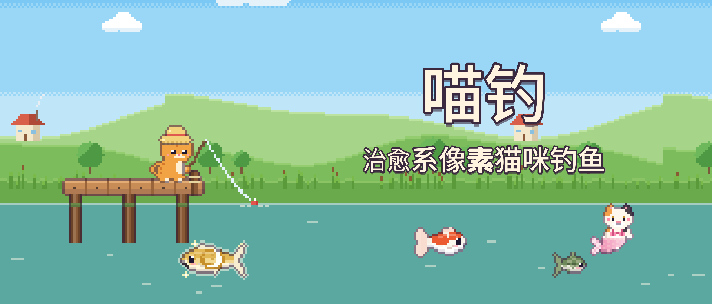
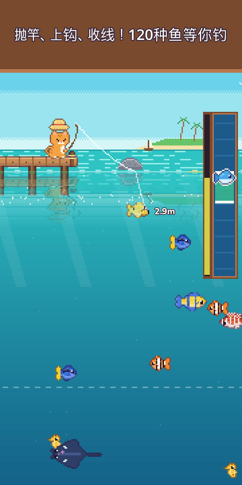
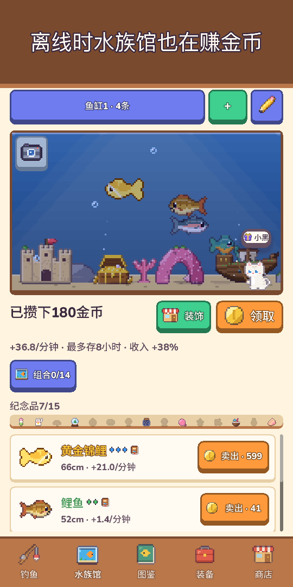
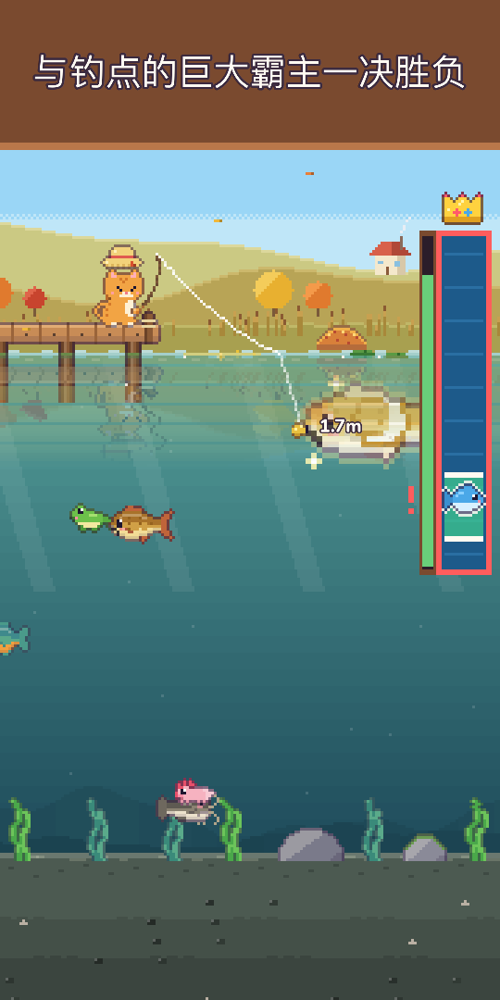
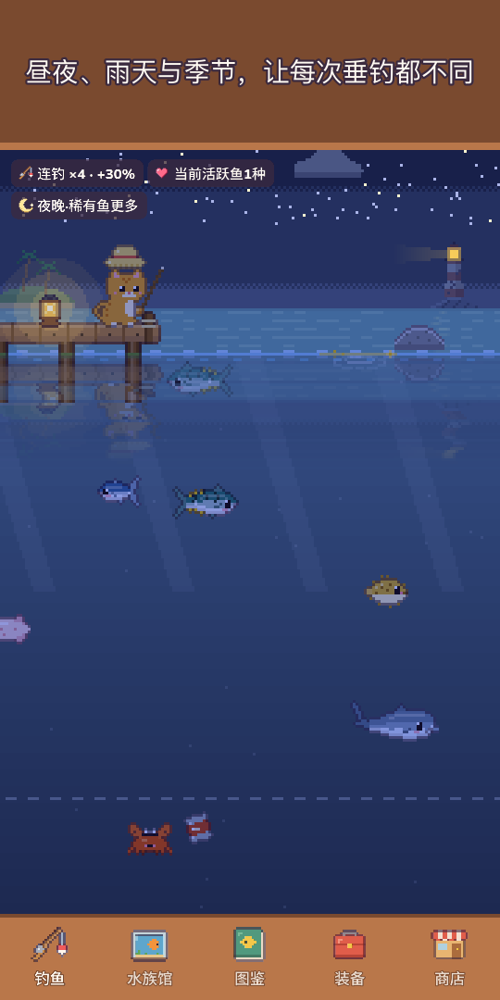
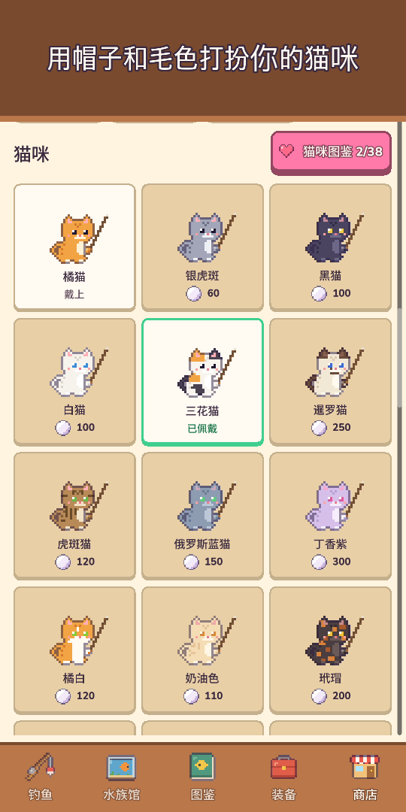
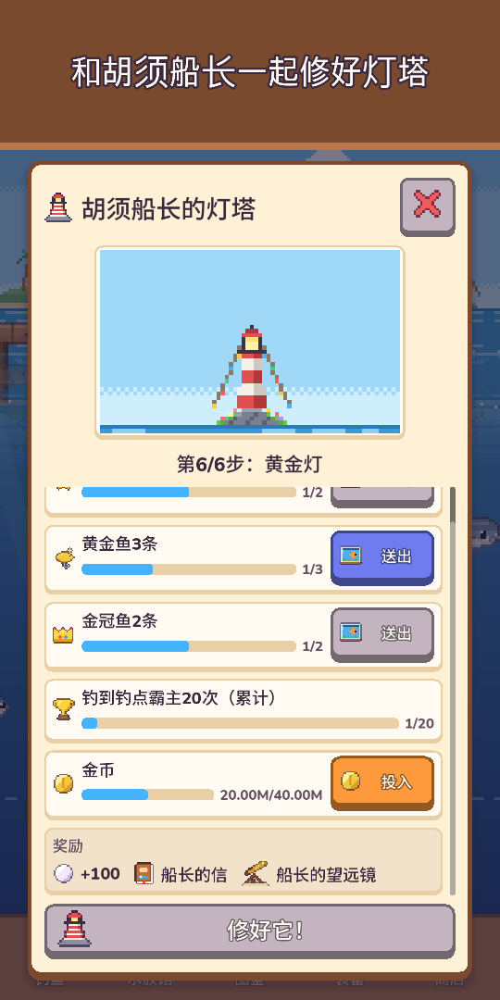
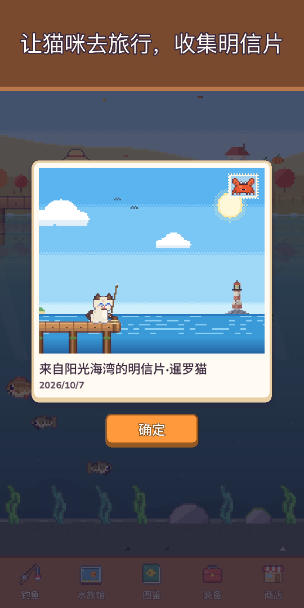

喵钓：像素钓鱼水族馆
治愈系像素猫咪钓鱼
带上钓竿和潜水服！钓起120种鱼，潜入水下拍摄海洋生物，邂逅比传说还稀有的猫咪人鱼。








和小猫一起，开启一场暖洋洋的钓鱼之旅！
《喵钓》是一款单指就能畅玩的可爱像素钓鱼游戏。长按抛竿，把鱼饵引向水下看得见的鱼儿，再用收线条感受上钩的手感，把它稳稳钓上来！
- 单手操作长按抛竿 · 左右拖动引导鱼饵 · 按住收线。浮漂一沉立刻轻点就是扬竿成功，抢先一步（不点也没关系）。涟漪、水花、震动反馈，金币嗖嗖飞进钱包
- 10个钓点、120种鱼草原池塘、山间溪流、阳光海湾、珊瑚礁、冰封湖、深渊、沉没神殿、云之湖、火山岛、红树林
- 稀有黄金鱼、稀有鱼群，月光鲤、星空鲸等传说之鱼，还有每天出现一次的钓点霸主
- 潜水探索穿上潜水服在每个钓点畅游，拍下钓不到的生物收入照片图鉴，打开手电筒还能找到藏在水底的深处洞穴
- 猫咪人鱼每个钓点住着一只比传说还稀有的猫咪人鱼，可以请她住进水族馆，或放生获得幸运祝福
- 25种路亚 · 5个等级路亚越好，稀有鱼越爱咬钩，还有召唤人鱼和传说的特别路亚。和大鱼硬拼太久，鱼线可能会断哦！
- 会变化的天空昼夜随设备时间变化，雨、雪和彩虹会影响鱼情，点流星还能拿珍珠；四季风景与真实月相，每个钓点可看未来6小时天气，闪闪发光的金色水波处更容易钓到大鱼
- 图鉴不少鱼有最爱的时段（夜晚、雨天、黎明或某个季节），抓准时机；最大纪录赢得金冠；首次钓到时的天空（时间、天气、季节、钓点）也会记在图鉴里
- 水族馆放进去的鱼离线时也在赚金币。用沉船、珊瑚拱门等装饰布置，凑齐鱼缸组合提升收入，鱼缸布局可用短代码分享；点一下鱼就能看到钓到的地点、入缸日期和相伴天数
- 猫咪生活与收集从青蛙帽到王冠，还有毛色、季节帽子和舒适的猫咪小窝。派家里的猫咪来一趟3小时的猫咪旅行，带回像素明信片；离开一阵子再回来，猫咪日记里会多一句话
- 邻居与节日邻居猫咪会来水族馆做客并留下纪念品，友情等级提升后解锁新对话、小礼物和挚友帽子。每周钓鱼大赛、每月一起钓鱼、每周来客鱼，以及每年五大节日（樱花祭、夏日祭、万圣节、圣诞节、新年祭）——集印章兑换永久保留的限定装饰
- 收集灯塔守护者胡须船长寄出的瓶中信，一起修复老灯塔
- 按自己的节奏成长升级鱼竿、渔轮、鱼线、鱼饵和鱼缸；用钓到的鱼制作鱼饵专钓这种鱼（传说鱼除外）；每日委托与每日礼物（断签也不会从头开始），还有陪伴天数礼物
- 治愈小彩蛋隐藏按钮、只欣赏风景的风景模式；钓鱼日志里的相册保存最近12张水族馆和猫咪小窝照片；每天找出躲在风景里的小家伙，还能得珍珠
- 支持离线，随时随地都能玩
基础免费游戏。可按需购买珍珠礼包、新手礼包和支持者礼包（免看广告领奖励、王冠帽子、离线收益上限翻倍），不花钱也能钓齐全部120种鱼。
没有强制广告，也没有横幅广告。广告只有你主动选择观看的奖励广告，比如双倍卖鱼。
今天会钓到什么鱼呢？快来抛一竿吧！